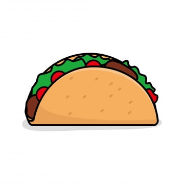

<h1> Taco_Recipe_TitleHere </h1>




<h2> Ingredients </h2>
<ul>
    <li>T</li>
    <li>aco</li>
        <ul>
            <li>Blue cheese</li>
            <li>Feta</li>
        </ul>
    </li>
</ul>
Description: sjxakslxnasx

<ol>
  <li>Mix flour, ba<king powder, sugar, and salt.</li>
  <li>In another bowl, mix eggs, milk, and oil.</li>
  <li>Stir both mixtures together.</li>
  <li>Fill muffin tray 3/4 full.</li>
  <li>Bake for 20 minutes.</li>
  <li>ol tag- li tag- for each step</li>
</ol>
